Projects
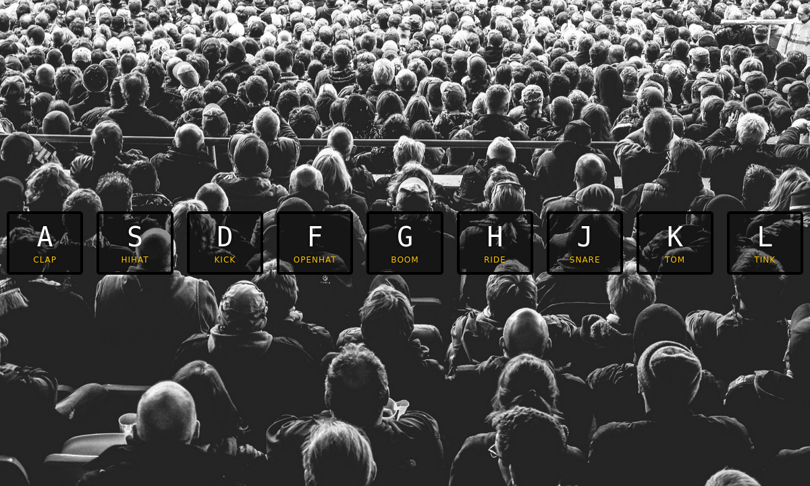
Drum Kit
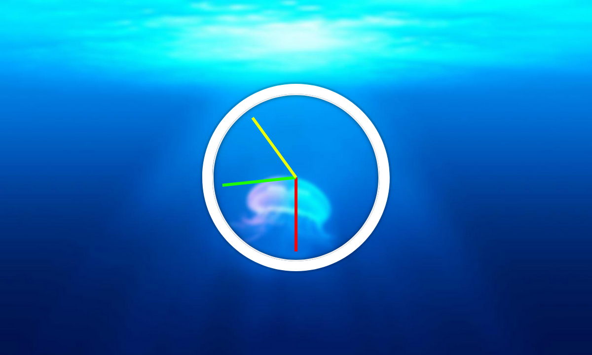
Clock
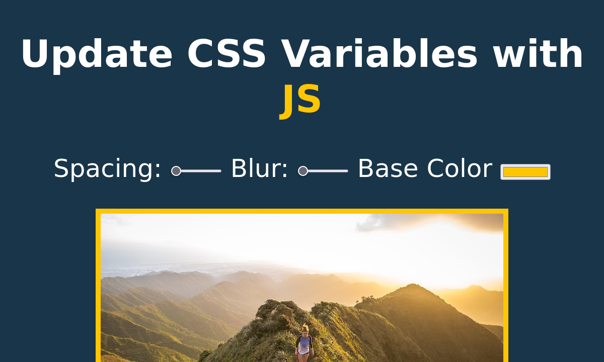
Css variables
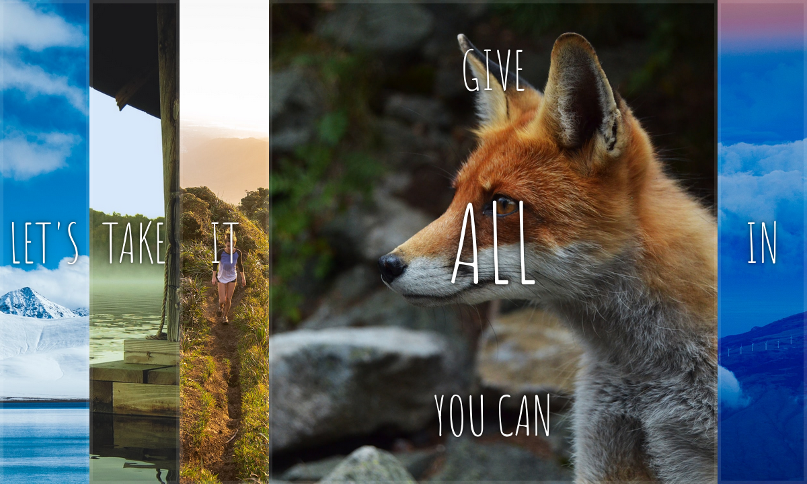
Flex panel gallery
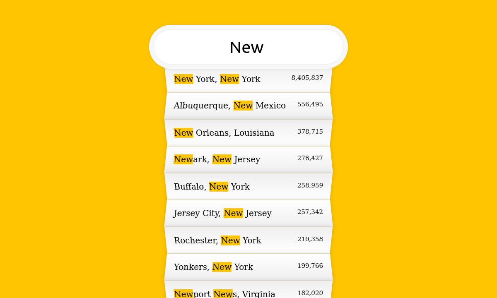
Ajax Search
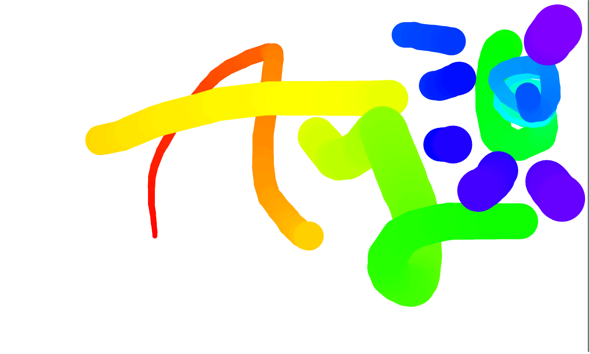
Paint with Canvas
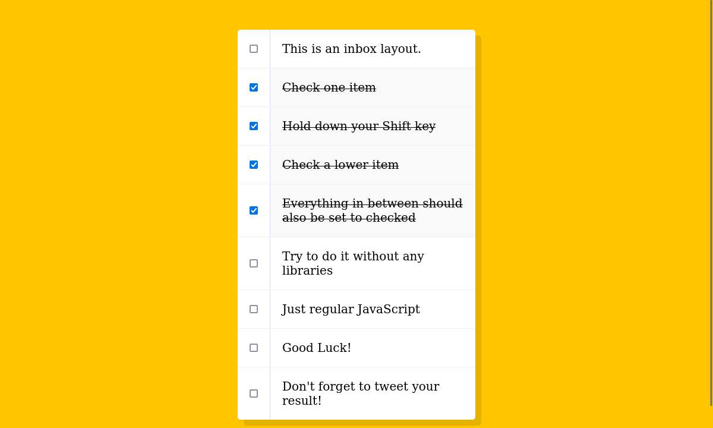
Check list shift Key
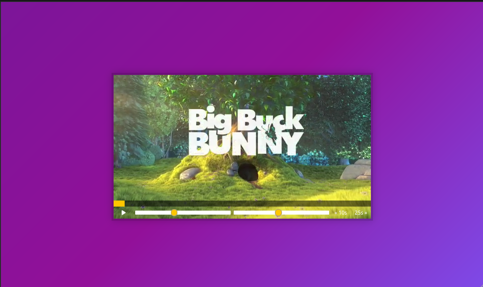
Custom video player
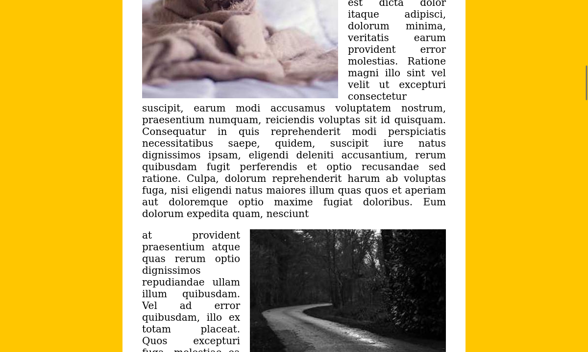
Slide in on scroll
LocalStorage
Mouse move shadow
Webcam fun
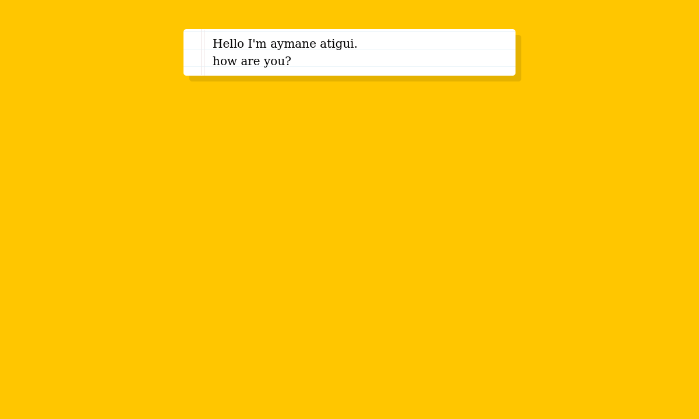
Speech detection
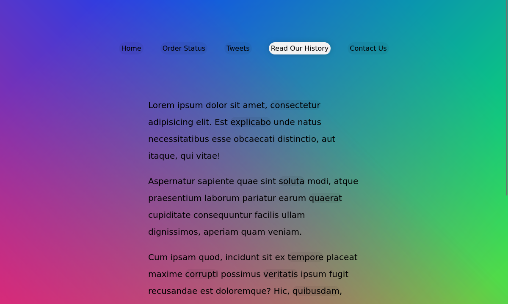
Follow link highlighter
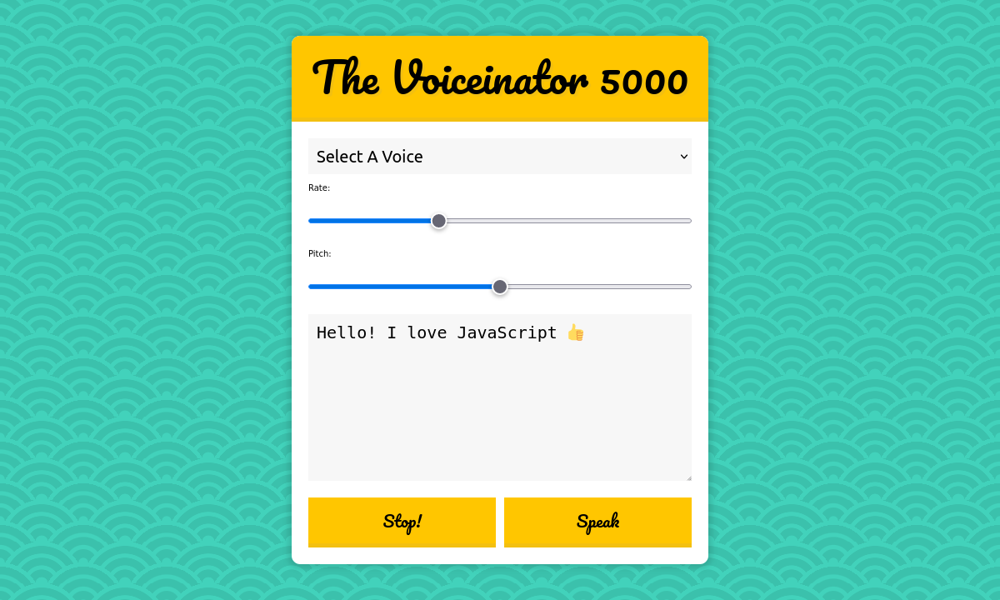
Speech Asynthesis